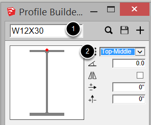
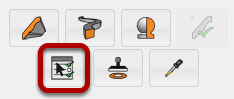
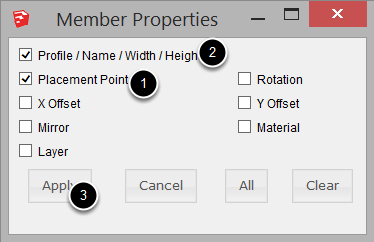
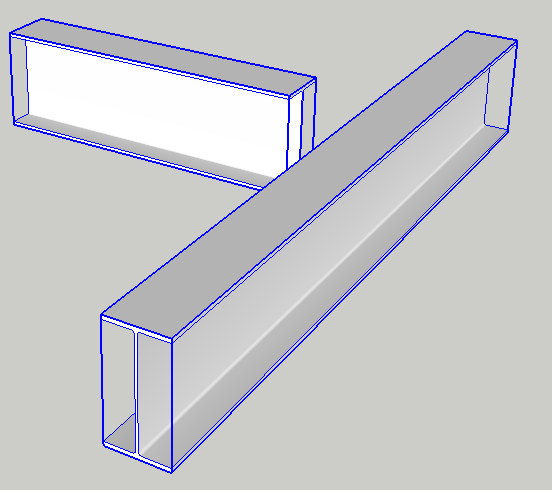

Open the Profile Builder Dialog and set the attributes.
In this example:
1. The Profile was changed to to a W12x30
2. The Placement Point was changed to Top-Middle.

Click the 'Select by Attributes' Button.
TIP: First ensure that there are Profile Members within the current model context (active group or component)

Check the boxes for the attributes that you wish to use as filters for the selection. In this example:
1.The Placement Point is checked.
2. The Profile is checked.
3. Click the Apply button to use the checked attributes as filters for selecting Profile Members.
